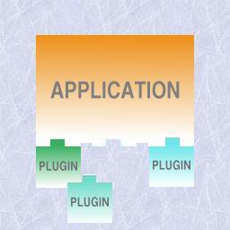

On plugins

An illustration of the plugin-concept: an independent application where units of software, intended to complement the functionality, can be "plugged" to.
A plugin is a unit of software intended to extend the functionality of an independent application at run-time (see Glossary). It provides several advantages, making this technology very popular among several programs that process heterogeneous data and would, otherwise, be less flexible and heavier (one of the most famous examples being Netscape that uses plugins to handle and/or view special data like audio or movies):
The functionality is added/changed/removed on runtime so that the application doesn't have to be rebuild and, furthermore, not even recompiled.
The application doesn't know the plugin beforehand ( it is the plugin's responsibility to present itself) providing wider flexibility to what functionality can be added.
It leads to a complete, clean separation from the main application and the various branches with their separate functionality. Thus we get a lighter main application focused on the essentials.
It is usually very easy for an user to add a plugin to the application.
Plugins are usually implemented as demand-loaded shared libraries. These type of libraries are only loaded on runtime as opposed to static whose code is included in the application on the compilation stage. They can be loaded in two different ways:
automatically at the start of the process and, thus, only unloaded at the end: the library must be linked at compilation stage;
by request of the program itself (using, for example, dlopen()): the code can be loaded and unloaded in the middle of the process or not even loaded at all; furthermore, the library is not linked at compilation stage;
When the library is loaded, the system checks if it is already in memory, so that, at most, one copy of the library is present in the memory.
Plugins are typically implemented as the second type since their characteristics are especially adequate for the "plug" concept. But in order to comply with the desired functionality of a plugin, the following list of requirements must be met:
The application must be independent from the plugins.
There should be a "black-box" view in both directions.
The application must not "know" the plugin beforehand; the plugin must introduce itself to the application.
The application must be loosely coupled with the plugins; a common interface to be provided by the plugins (whether total or partial) must be defined precisely (Contract).
The application should define what services are provided to the plugin via interface definitions.
A plugin must be self-contained.
A plugin should create a plugin instance to handle each task.
The interface common to all plugins is one of the critical points and, although this interface varies between technologies, the plugin should provide:
information on the type of task it can handle
a function to be called to handle that type of task (do_work())
an instance-type strategy including a structure to store all the data of a particular task and a way to know if there aren't any tasks (instances) still working so that the plugin can be unloaded
a function to initialize the plugin
Some popular examples

Netscape (and other Web browsers) uses plugins to view/handle special data present in some Web pages, for example, audio and video.
The API is very well defined in the documentation: it contains a list of functions provided by Netscape, a list of functions the plugin must and can define and structures to be used. Since the communication is all done by this total interface, both parts act as complete "black-boxes". Another interesting characteristic is the life cycle of a plugin: Initialize(when the plugin is first called), New Instance(each time it is invoked), Destroy Instance(when a task is completed and that instance is no longer needed) and Shutdown (when all instances are destroyed).
PluginInitResult
init_plugin (CommandContext *context, PluginData *pd)
{
FunctionCategory *cat;
5
/* The next line checks if the Gnumeric version being used corresponds
to the required by the plugin */
if (plugin_version_mismatch (context, pd, GNUMERIC_VERSION))
return PLUGIN_QUIET_ERROR;
10
cat = function_get_category (_("Fact PlugIn"));
function_add_args (cat, "MyFactorial", "f", "number", NULL, func_fact);
pd->can_unload = can_unload;
15 pd->cleanup_plugin = cleanup_plugin;
pd->title = g_strdup ("My PlugIn Plugin");
return PLUGIN_OK;
} |
The program listing above is part of a Gnumeric plugin source code. Gnumeric uses plugins both to handle different formats (e.g., Excel) and add functions not defined (statistical, numerical,...). The API the plugin must define is very concise and partial: the plugin registers the new functions it defines (in lines 11-12, the plugin is registering a function, in this example, the factorial function). The init_plugin() function is called at start-up. Besides registering the functions it also provides information on the Plugin (in this case, the title) and functionality to unload the plugin (e.g., check if there aren't any instances left). Although Gnumeric plugins are not the best example, since the requirements above are not completely met (Gnumeric is completely transparent to the plugin) it provides a very simple example with most of the core ideas.